Activity: Using Solution Manager (scenario 2)
In this activity, extend the highlighted faces 40 mm in the X direction. The lower portion of the model should not change.
Click here to download the activity file.
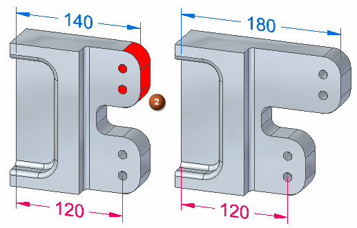
The four holes are aligned with an Aligned Holes relationship. The outside cylindrical faces are concentric to the holes.
-
Open solution_manager_scenario2.par.
On the Advanced Design Intent panel, click the Restore button (4) to restore default settings. Auto Preview (5) should not be checked.

For this activity, turn on the Lock to Base Reference (1) Design Intent. This will lock face (2) to the YZ reference plane.

Select the face shown.
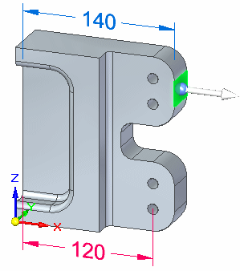
Start the synchronous edit by clicking the axis.
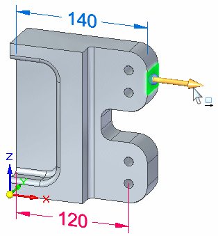
In the dynamic edit box type 40 and press Enter.
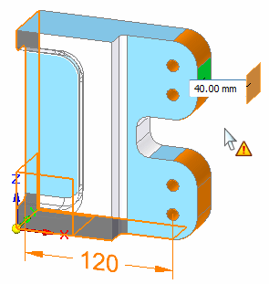
Right-click on a few of the orange colored faces and observe the relationship palette for each face. The relationships listed on the palette that have a yellow triangle on them are the relationships that are participating in the failure.
Right-click the planar face (1).
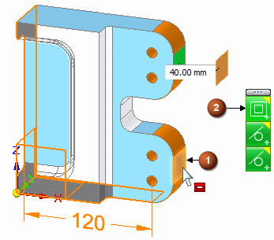
On the relationship palette, pause over the coplanar relationship (2). When the fly out option displays, pause over the fly out and notice the face that highlights is coplanar to the selected face (1).
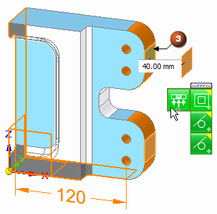
The selected face (1) is contributes to the failed condition. The face (3) we are trying to move cannot move because it is coplanar to the selected face (1). Click the relationship on the fly out or on the palette to relax that relationship. The relationship button turns gray to denote the single face relationship is temporarily relaxed. The solution is still in a failed condition.
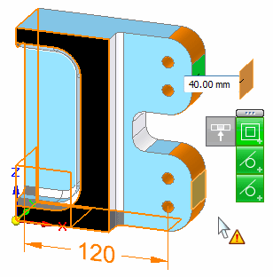
The solution still contains another over constrained relationship. All of the holes are related with an axial alignment and one the holes is locked by a dimension. We need to relax the Aligned Holes relationship.
Right-click the cylindrical face (4).
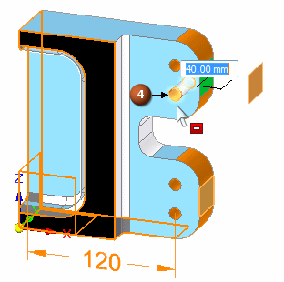
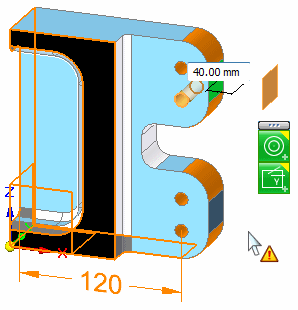
On the relationship palette, click the Aligned Holes relationship (5) to relax all Aligned Holes relationships.
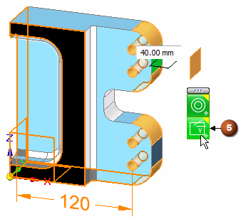
The synchronous edit solves. On the Advanced Design Intent panel, click the Solution Manager check box to complete the synchronous edit.
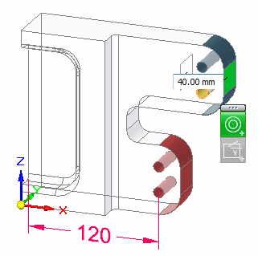
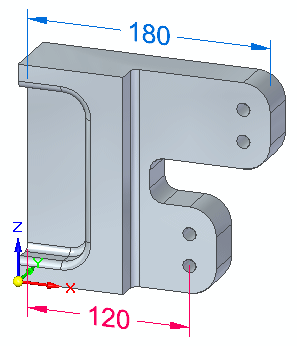
When performing a synchronous edit, you can either have success or failure. You can use the Solution Manager to alter a successful solution to achieve the desired result. In a failed condition, the Solution Manager can help you with graphical feedback to determine what is causing the failure.
There may be more than one way to correct a failed condition. You can use the Solution Manager, or you can change Advanced Design Intent panel settings, or you can relax all relationships.